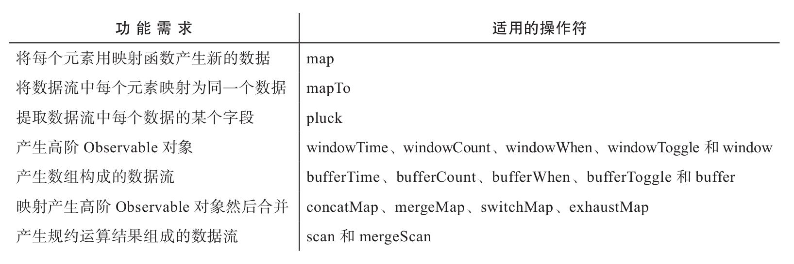

在前面章节中介绍的操作符都只是Observable对象中数据的搬运工，并没有修改数据流中的数据。合并类操作符把多个数据流汇合为一个数据流，但是汇合之前数据是怎样，在汇合之后还是那样；过滤类操作符可以筛选掉一些数据，其中回压控制的过滤类操作符还可以改变数据传递给下游的时间，但是数据本身不会变化，怎么进就怎么出。这一章会介绍RxJS对于数据的转化处理，也就是让数据管道中的数据发生变化。RxJS中提供了一系列操作符支持转化的功能，统称为转化类（transformation）操作符。
在这一章中，我们还会再次研究回压控制的另一种方式，无损（lossless）的回压控制。
下面列举了各种场景下适用的转化类操作符：
